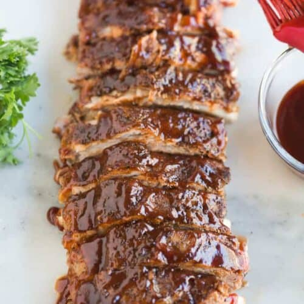

InstaPot Ribs Recipe
Fall off the bone instant pot ribs
This recipe has been a go to for my family for years during the winter months when its too cold to use the smoke. The ribs fall off the bone and the liquid smoke give a great flavor. I hope your family enjoys them as much as mine.
Ingredients
- 1-2 racks pork ribs
- 1 teaspoon salt
- 1 teaspoon freshly ground black pepper
- 1 teaspoon garlic powder
- 1 teaspoon chili powder
- 1 teaspoon onion powder
- 1 teaspoon light brown sugar
- 1 cup water
- 1/2 cup apple juice , or ¼ cup apple cider vinegar
- 1 teaspoon liquid smoke , optional*
- 1 cup barbecue sauce , homemade or store-bought (*see note)
Instructions
- Remove membranes from the back of ribs, if needed.
- Rubs seasonings over both sides of ribs.
- Place wire trivet rack in the bottom of the instant pot.
- Add water, apple juice (or apple cider vinegar) and liquid smoke (optional, but recommended for that great smokey flavor).
- Place the ribs upright, with the meat side facing out. If you’re using one large rack of ribs, then circle them around the pot.
- Secure lid and close vent.
- Press “manual” or “pressure cook” and cook on high pressure for 25 minutes.
- When the timer beeps, allow the pressure to naturally release for 15 min, then turn the valve to quick release.
- Carefully remove ribs to a large, foil-lined baking sheet and slather them in BBQ sauce.
- Optional: broil them in the oven for 2-3 minutes to caramelize the bbq sauce.